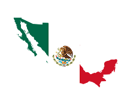
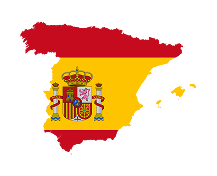

Learn Spanish Online from Native Teachers
Grow your confidence in Spanish conversation, grammar and reading with live, online classes, professional teachers and a schedule that suits you.
Get startedTruly Experience Foreign Countries
Travel around the world and meet millions of spanish speaking perople

Mexcio
+130 million speakers
Colombia
+50 million speakers

Spain
+47 million speakers

Argentina
+45 million speakers
Ready to start learning Spanish?
Lets try some!
Get started
How long does it take to learn Spanish?
People often want to know how to learn Spanish fast or are looking for the easiest way to learn Spanish. The US Foreign Service Institute suggests it takes 600-750 hours for an English-speaker to learn Spanish fluently. Remember, how long it takes to learn Spanish really depends on you. Your time commitment, learning plan, materials, and other resources are all important. Students without a learning plan can be confused about what to study and lack awareness of whether they’re improving. A lack of a study plan is often why students reach a basic level of Spanish and then plateau or stop studying altogether. Your materials and resources will also be a big factor. With an effective curriculum of lessons and a native-speaking teacher, your Spanish learning will not only be quicker but more comprehensive. Some people also have the resource of an immersive environment: If you live in a Spanish-speaking country you’re likely to learn faster. Finally, your time commitment will determine how quickly you learn. A student that can learn 8 hours per week will learn much faster than a student who studies just 1 hour per week.
Common Spanish phrases
There are some common Spanish phrases that can help you go from zero to 60 in your speaking ability.
- How are you? ¿Qué tal?
- This can also be used for “how is [something]?” For example, “how was your weekend?” ¿Qué tal tu fin de semana?
- Nice to meet you. Mucho gusto.
- Where are you from? ¿De dónde eres?
- I’m from… Soy de…
- Have a good one! Que le vaya bien.
- You can say this whenever you leave a shop or a restaurant.
- Excuse me. Disculpe.
- This is for calling the attention of someone like a waiter